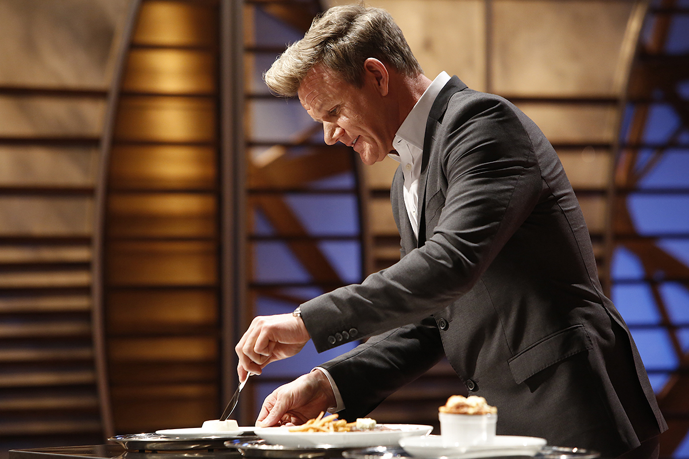
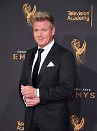

About
Born in Johnstone, Scotland in 1966, Gordon James Ramsay is the son of Helen (nee Cosgrove) and Gordan James Sr., who worked as a swimming pool manager, welder, and shopkeeper. He is one of two middle siblings, and has an older sister, a younger sister and a younger brother. Gordon describes his father as a neglectful and occasionally violent alcoholic and womanizer who moved his family constantly. At the age of 14, Ramsay got his first job washing pots at an Indian restaurant which his sister was a waitress at. At the age of 16, he left the family home and moved into an apartment in Banbury.

Career
Ramsay's interest in cooking began in his teenage years; rather than be known as "the football player with the gammy knee", he decided to pay more serious attention to his culinary education at age 19. Ramsay enrolled at North Oxfordshire Technical College, sponsored by the Rotarians, to study hotel management. He described his decision to enter catering college as "a complete accident". In the mid-1980s, Ramsay worked as a commis chef at the Wroxton House Hotel. He ran the kitchen and 60-seat dining room at the Wickham Arms until he quit after having sex with the owner's wife. Ramsay then moved to London, where he worked in a series of restaurants until being inspired to work for Marco Pierre White at Harveys.
After working at Harveys for two years and ten months, Ramsay, tired of "the rages and the bullying and violence", decided that the way to further advance his career was to study French cuisine. White discouraged Ramsay from taking a job in Paris, instead encouraging him to work for Albert Roux at Le Gavroche in Mayfair. Ramsay decided to take his advice, and there, Ramsay met Jean-Claude Breton, who later became his maître d'hôtel at Restaurant Gordon Ramsay. After Ramsay worked at Le Gavroche for a year, Roux invited him to work with him at Hotel Diva, a ski resort in the French Alps, as his number two. From there, a 23-year-old Ramsay moved to Paris to work with Guy Savoy and Joël Robuchon, both Michelin-starred chefs. He continued his training in France for three years, before giving in to the physical and mental stress of the kitchens and taking a year to work as a personal chef on the private yacht Idlewild, based in Bermuda. The role on the boat saw him travel to Sicily and Sardinia, Italy, and learn about Italian cuisine. Upon his return to London in 1993, Ramsay was offered the position of head chef, under chef-patron Pierre Koffmann, at the three-Michelin-starred La Tante Claire in Chelsea. Shortly thereafter, Marco Pierre White reentered his life, offering to set him up with a head chef position and 10% share in the Rossmore, owned by White's business partners. The restaurant was renamed Aubergine and won its first Michelin star 14 months later. In 1997, Aubergine won its second Michelin star. A dispute with Ramsay's business owners, who wanted to turn Aubergine into a chain, and Ramsay's dream of running his own restaurant led to his leaving the partnership in July 1998. He has described the decision to set out on his own as "the most important day of my entire cooking career; the most important decision of my life".
In 1998, Ramsay opened his own restaurant in Chelsea, Restaurant Gordon Ramsay, with the help of his father-in-law, Chris Hutcheson, and his former colleagues at Aubergine. The restaurant gained its third Michelin star in 2001, making Ramsay the first Scot to achieve that feat. In 2011, The Good Food Guide named Restaurant Gordon Ramsay the second best restaurant in the UK, behind the Fat Duck in Bray, Berkshire.
After establishing his first restaurant, Ramsay's empire expanded rapidly. He next opened Pétrus, then Amaryllis in Glasgow (which he was later forced to close), and later Gordon Ramsay at Claridge's. He hired his friend and maître d'hôtel Jean-Philippe Susilovic, who works at Pétrus and also appears on Ramsay's US television programme Hell's Kitchen. Restaurants at the Dubai Creek and Connaught hotels followed, the latter branded with his protegee Angela Hartnett's name. Ramsay has opened restaurants outside the UK, beginning with Verre in Dubai. Two restaurants, Gordon Ramsay at Conrad Tokyo and Cerise by Gordon Ramsay, both opened in Tokyo in 2005. In November 2006, Gordon Ramsay at the London opened in New York City, winning top newcomer in the city's coveted Zagat guide, despite mixed reviews from professional critics.
In 2007, Ramsay opened his first restaurant in Ireland, Gordon Ramsay at Powerscourt, at the Ritz-Carlton Hotel in Powerscourt, County Wicklow.[29] This restaurant closed in 2013. In May 2008, he opened his first restaurant in the Western US, in The London West Hollywood Hotel (formerly the Bel-Age Hotel) on the Sunset Strip in Los Angeles. The contract expired in 2015, closing the restaurant.
Awards
Restaurant Gordon Ramsay, located at Royal Hospital Road, London, was voted Top Restaurant in the UK in the London Zagat Survey in 2001 and was awarded its third Michelin star.
He was appointed Officer of the Order of the British Empire (OBE) by Queen Elizabeth II in the 2006 New Year Honours list for services to the hospitality industry, but almost missed the award ceremony when his plane was delayed.
In July 2006, Ramsay won the Catey award for "Independent Restaurateur of the Year", becoming only the third person to have won three Catey awards. Ramsay's two previous Catey awards were in 1995 (Newcomer of the Year) and 2000 (Chef of the Year). The other two triple-winners are Michel Roux and Jacquie Pern. In September 2006, he was named as the most influential person in the UK hospitality industry in the annual Caterersearch 100 list, published by Caterer and Hotelkeeper magazine. He overtook Jamie Oliver, who had been top of the list in 2005. Also in 2006, Ramsay was nominated as a candidate for Rector of the University of St Andrews, but lost at the polls to Simon Pepper.
Ramsay's flagship restaurant, Restaurant Gordon Ramsay, was voted London's top restaurant in Harden's for eight years, but in 2008 was placed below Pétrus, a restaurant run by former protégé Marcus Wareing. In January 2013, Ramsay was inducted into the Culinary Hall of Fame.
On 14 June 2017, Ramsay set a new Guinness World Record for the 'Fastest time to fillet a 10 lb fish', achieving the record in one minute and five seconds. On 16 August 2017, Ramsay set a 'Guinness World Record for the Longest Pasta Sheet Rolled in 60 Seconds', which measured 1.45 metres. In June 2022, he was recognised by the International Hospitality Institute as one of the 100 Most Powerful People in Global Hospitality. On 11 May 2023, Ramsay along with Nick DiGiovanni set the Guinness World Record for largest Beef Wellington. It came in at a weight of 25.76 kg (56.79 lb). It also measured 2 ft 5 inches long by 13 inches wide and 8 inches tall.
Restaurants
Chef Ramsay has owned and operated several restaurants, all under the banner of his Restaurant Group: Gordan Ramsay Restaurants. A list of his Restaurants, their menus, and information on placing reservations can be found here